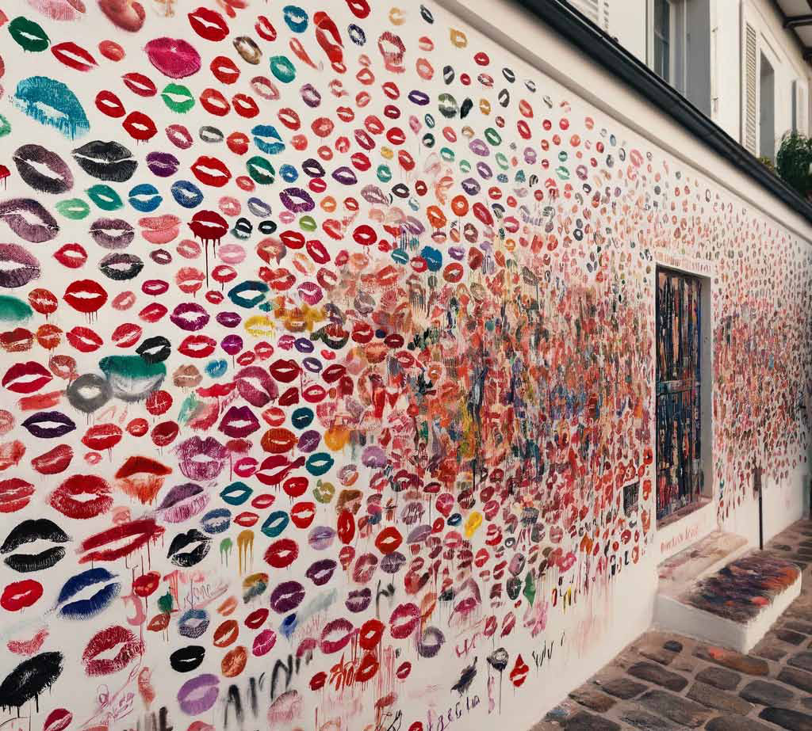

Black Cuckoo
Black Cuckoo
Jaffna Monitor hellojaffnamonitor@gmail.com 43 Story Translated from the original Tamil short story karuṅkuyil (fUq;Fapy;) by Shobasakthi Translated by: Eḻuttukkiṉiyavaṉ (vOj;Jf;fpdpatd;) Black Cuckoo R avishaṅkar could not comprehend why white women tourists were falling over one another to kiss the outer wall around his house. It got a fresh coat of paint just three months ago. Now, he could count at least a hundred lipstick marks. Perhaps it could have had a certain kind of beauty had they been all of the same color. But the lipstick marks came in all colors, red, purple, green, black, and so on, making the wall look like an ugly pockmarked face of someone who was afflicted with the monkeypox. As if this were not enough, some even left little notes on cards or scraps of paper on top of the wall. When Ravishaṅkar quizzed his eighty-year-old father, he responded somewhat indifferently, “What can I do son? I have tried my best to chase the white people away. But when I doze off for a bit, they manage to do their dirty deed. Some even tried to enter the house. Your mother and I close the door and stay indoors. We were waiting for you to return. Cursed Colombo.” There was a tinge of irritation in his voice that their son was using him and the old woman as unpaid guards for the house. Ravishaṅkar was the owner of seven or eight gas stations in London. As soon as he saw
Jaffna Monitor hellojaffnamonitor@gmail.com 44 an advertisement on some website that in the Wellawatte area of the city of Colombo, house number 56 on the 42nd Lane was for sale, he snapped it up cheaply. Back then, it was a dilapidated house in ruins. He poured his London pounds to renovate the house to make it into a crystal palace. He had repaired the outer wall, whitewashed it, and installed a piece of marble in it with the word “Ravi Villa” embossed in gold lettering. Before he returned to London, he forced his parents, who were living a relaxed life in the village of Puḷiyaṅgūdal, to move to the new house in Wellawatte. But when he returned three months later, he was confronted with this situation. Had he realized that all these kisses and notes were intended for the name that was printed in yellow on a small piece of wood shaped like a black cuckoo hanging on the same wall ninety odd years ago, the wall that bore the name Ravi Villa now, things could have been different. His fantastic business brain would have sold the house at ten times the purchase price. This was the house that a great poet had rented for two years in 1929. The poet, who at twenty had dazzled the world with a collection of poetry titled ‘Twenty Love Poems and a Song of Despair,’ was twenty-five when he moved into this house. He was an official at the Chilean consulate. He wrote much of his celebrated book of poetry, ‘Residencia en la tierra,’ in the west room of this house, sitting in front of the windows that looked out towards the Laccadive Sea. It was the black cuckoo hanging at the entrance that helped Sampaṅki identify the house at first. Her father Muththān had repeated everything about this house many times over. She should go there at the first light of dawn. How should she enter the yard? If she would noiselessly open the iron grill gate next to the hanging black cuckoo to enter the yard, she would see a footpath to the left of the house in the midst of croton bushes. If she walked along that path, she would come to the wooden toilet which was set apart some distance from the house. There, she should remove the iron bucket fitted under the hole in the toilet floor and empty it into the sea a short distance away. She should then rinse the bucket in the sea and put the bucket back into its slot in the toilet. She should do all this with lightning speed. There was a tin can next to the toilet door. Sometimes, there would be some coins left inside the can as the fee. Sampaṅki should carefully secure the coins within a knot in her sāri without losing them. After all, when Sampaṅki was a little girl, she did accompany her mother Kandhammā when she went out to work. Yet, Muththān kept repeating his instructions. “You must not forget any of these instructions. Most importantly, if you happen to see the white master of that house, you must greet him by saying, ‘Good morning;’ Sampaṅki, let’s hear you say it out loud: “Good morning.”
Jaffna Monitor hellojaffnamonitor@gmail.com 45 Sampaṅki just nodded her head. She hardly opened her mouth to speak. In course of time, Sampaṅki’s parents had come to realize that she was born with a mental handicap. They had hoped that it was because of a divine curse and that it would be lifted someday. Kandhammā kept on lamenting to the gods. Cholera took away the three children that followed Sampaṅki even before they were weaned. Kandhammā had vowed that if her only remaining child got her intellect straightened out, she would throw salt and pepper as offering to the Poṉṉiammaṉ temple. She bought a small silver tongue from Kochikadē St. Anthony’s shrine and left it as an offering by the shrine’s doorstep. She went into the Dutch canal by herself to pluck white lotus flowers and left them in front of the Mahābōdhi vihāra as her offering. Sampaṅki’s handicap remained through all of these seventeen years. Even worse, as she grew older, she became increasingly forgetful. She even forgot important matters quickly. Her neighbors teasingly called her a ‘skink’ because of the seemingly forgetful nature of that lizard-like animal. The deficiencies meant that finding a husband for her was being delayed, too. Muththān’s buddy Kēsavayyā had been dropping hints to Muththān that he would be interested in marrying Sampaṅki. But Muththān did not want to give away his daughter to that widower and drunkard. Her mother, who was beseeching and lamenting to gods asking them to cure Sampaṅki had now graduated to questioning and cursing the gods. If there was a human sound emanating from their hut, it was surely Kandhammā cursing the gods out. Sampaṅki did not like to talk to anyone. She preferred solitude. She did not care at all that a husband had not been found for her. Of all the things in this world, she loved the sea. When she was small, she had heard her grandmother say, “I saw the sea for the first time when I boarded the ship to Ceylon.” She had worried about how it was possible for a place without the sea to exist. Most of her time was spent alone on the seashore. There was a large ship that had beached. They say that it was a Dutch warship from a hundred years prior. Birds descend on that ship in a myriad of configurations: helixes, towers, and flowers in blossom. When they fly off again, they form yet another magical arrangement. Once she even saw a group of black birds rising off the ship in the shape of an elephant. She never tired of watching those avian illusions, eyes wide with wonder. Sampaṅki always walked slowly. When she sat down to eat, it would take her an hour to consume a coconut shell worth of porridge, constantly blowing on it to cool it down. She did everything in slow motion. She had only one sāri. Someone had given that tattered red sāri with a golden border as wages to Kandhammā. She spent an hour every day washing that sāri with neem seed powder. She would spread it out on the sand to dry and walk around it to make sure that she had washed it properly. Even when she was washing a pot, she would rub it with wood ash until it shone. She would hold it up at eye level to admire her handiwork. Even though she was slow, she was thorough and correct in everything she did. Their seaside hut was part of a government colony at Bambalawatte for sanitary workers. There were around twenty huts on the bank of the Dutch canal where it merged with the sea. When the tin roof became unbearably hot in the sun, the ground beneath it was soggy and muddy. During the rainy season, the Dutch canal would overflow and flood the huts. The workers in this little colony were responsible for removing the toilet waste from all the houses within a five-mile radius. They swept the streets. They removed pets when they
Jaffna Monitor hellojaffnamonitor@gmail.com 46 died. Men and married women went to work. Unmarried women were never sent out to work. But Sampaṅki was compelled to go to the black cuckoo house. On Kēsavayyā’s insistence, Muththān had a little too much to drink in Company Roads, formerly known as Slave Island. By midday, he had fallen ill. The drink called kaṭṭukkampi or tie wire was just pure distilled alcohol. Kēsavayyā’s habit was to squeeze lemon juice into it. Something must have gone wrong with the distilled alcohol. Muththān collapsed onto the sand. His blood was escaping his body through his mouth and stomach like rice water. He could not even stand up straight. In the mornings, he needed to empty the toilet-bucket waste from six houses, collect the waste from them into a tin bucket, carry it on his head, and empty it into the sea. His customers would not tolerate even a day’s absence. They would immediately find a replacement worker. It was in this backdrop that they planned for Kandhammā to go to the five houses in Colpetty. She must finish work in these five houses and then rush off to the houses in Cinnamon Gardens that were her regular customers. Sampaṅki would therefore need to go to the only remaining customer in the opposite direction, in Wellawatte. It was a fact that this family could not afford to forgo the income of even half a cent. The family decided to keep it a secret that Sampaṅki had to go out to work. There would be talk and ridicule from the neighbors if they learned that an unmarried woman was sent out to work. Finding her a husband would become even more difficult. That night, Sampaṅki could barely sleep, worrying about

Jaffna Monitor hellojaffnamonitor@gmail.com 47 not forgetting any of the instructions that her father kept repeating. Early next morning, before it was light, Sampaṅki covertly left the colony and walked slowly along the seashore towards the specified landmarks. She usually walked on the wet sand, planting each step firmly and fiddling with the sand with each step. She was tall and slim. There was not an ounce of excess fat in her body. She had worn her long hair into a bun on the top of her head, making her look even taller. She had copper bangles in each arm. Above the thick lips that concealed her beautiful buck teeth on either side of her mouth, her red glass nose studs on each nostril shone like tiny flames. Kandhammā never tired of asserting that Sampaṅki was the prettiest woman in the whole colony and the one with the fairest skin. She said, “When she eats black plums, your eyes can see the black juice going down her throat.” The black cuckoo house was not far from Sampaṅki’s colony. If one headed southward along the seashore from Bambalawatte, they could arrive within fifteen minutes. But Sampaṅki’s slow gait required thirty minutes. She walked with hesitation. Muththān had said, “There is a lazy dog in that house Sampaṅki. You are scared of even cats, Sampaṅki. That dog will not even sniff you. It will be dozing off by the entrance.” But anxiety still lurked in a corner of Sampaṅki’s mind. She walked slowly, murmuring the directions that Muththān had drummed into her head. As she passed the Darmashānthi vihāra, there was the coco de mer tree. As Sampaṅki took the sand road opposite that tree, heading eastwards, dawn was complete. Amidst the wild growth of shrubbery and bushes, stood the new, tall, white house. The black cuckoo was hanging to the right of the iron grill gate on the outer wall. Sampaṅki hesitated for a few minutes, staring at the black cuckoo. The house lay still. She peeked through the iron grill gate. Just as Muththān had said, the lazy dog was curled up by the front entrance. Sampaṅki pushed the iron grill gate gently and it opened noiselessly. She had now forgotten whether Muththān had told her to turn left or right. As she crossed the gate and stepped into the yard, the dog raised its head, and she turned hers. On the left, between the newly planted croton plants, the footpath was visible. She walked along the footpath. She circled the house and walked towards the outdoor toilet without making a sound. The toilet door was open. A pretty white woman was squatting on the toilet, stark naked. Sampaṅki froze. She had no idea what she should do next. She could do nothing but lower her eyes. Her legs froze. The white woman squatted there staring at Sampaṅki with her blue eyes. Her hand was moving behind her. Suddenly, she jumped up, screamed, and ran towards the house, still naked. Sampaṅki felt that she was really going to faint. The white woman’s urine bubbled up around the toilet bowl. The bucket was full of excrement and rags. Just as Muththān had said, the lid for the bucket was hanging from the outer wall of the toilet. She closed the bucket lid tightly, lifted the bucket onto her head and started walking towards the seashore. As she walked, she picked up a tiny acorn-like withered baby coconut from the ground with her toes, lifted her foot up to her left hand so that she could grasp the baby coconut with it. She squatted at the water’s edge and emptied the bucket into the sea. Then she waded into the water up to her knee and scrubbed the bucket clean with the dried baby coconut and rinsed it. She was afraid to go back to the house. She imagined the naked white woman to be a mōhiṉi ghost. With her eyes lowered,
Jaffna Monitor hellojaffnamonitor@gmail.com 48 she walked back to the house and inserted the bucket into its slot. Only then did she notice the small tin can by the toilet door. She had forgotten all about it. She lifted it up. It was empty. Sampaṅki returned to Bambalawatte. She took a long relaxing bath in the sea and was walking back to the hut in a wet sāri when she noticed Kandhammā returning after work, carrying a cassava tuber in her hand. In that hut, they did not have the habit of making breakfast. That day, the cassava would be the lunch for the mother and daughter, and a bit of salted porridge for the unwell Muththān. “Was there money in the tin can?” asked Kandhammā. Sampaṅki shook her head. When Kandhammā repeated, “Remember well! Was there money in the can?” Sampaṅki shook her head again. When Sampaṅki went to the black cuckoo house on the third day, a young woman with East Asian features sat on the steps smoking a cigar. She stared intently at Sampaṅki. She was wearing a white full-sleeved shirt and a sarong that looked like a rainbow. When Sampaṅki went around to the back of the house with her eyes cast downwards, she could hear the rustling of leaves. When Sampaṅki proceeded to the toilet without turning her head, the rustling stopped. When she closed the toilet bucket, that woman took a copper coin and tossed on the ground in front of Sampaṅki who picked it up and tied into a knot on her sāri, lifted the bucket to her head and started walking. When Sampaṅki went to the black cuckoo house the next day, that woman was no longer there. In the following days, Sampaṅki saw several different types of women at the black cuckoo house. One day, as Sampaṅki entered, a white woman, a Malay woman, and a Ceylonese woman emerged from the house giggling, with drunkenness in their eyes, and started walking towards the beach. When Sampaṅki went to empty the toilet bucket they were standing on one leg, facing eastwards, with their hands brought together above their heads in worship. On the ninth day, when Sampaṅki went to the black cuckoo house, the front window was open. Inside, a young white man kept

Jaffna Monitor hellojaffnamonitor@gmail.com 49 staring at her with wide eyes. Sampaṅki lowered her eyes and walked towards the toilet. When she returned with the toilet bucket on her head, he was sitting at the doorstep with a book in his hand. He was handsome and well-built, wearing only short pants. When Sampaṅki returned with the empty bucket, he stood holding the iron grill gate, looking at Sampaṅki with a smile. When Sampaṅki approached, he touched the piece of wood in the shape of a black cuckoo and said something. Sampaṅki was stunned. Not knowing what she should do, she stood rooted to the spot. She had completely forgotten that Muththān repeatedly said, “If you see the master of the house, you must say ‘Good morning.’” The white man started walking towards the sea, singing aloud. The next day, when Sampaṅki went to the black cuckoo house, the white man was standing by the back entrance in semi darkness. He was wearing a gown that reached down to his knees, and a mischievous smile. There was a strange sound coming from within his gown. She had never heard such a sound before. When she approached the toilet, she noticed that the tin can was full of coins. She secured all the coins into a knot on her sāri. He stood there watching her until she left with the toilet bucket. When Sampaṅki laid all the coins on the mat before Muththān, he said, “White people are like this. If they like our work, they reward us well.” The next day, he was waiting at the same place when Sampaṅki showed up. When she approached the toilet door, she saw that there were some glass bangles in the tin can. She kneeled on the ground and put the bangles on both hands. Then, she lifted the toilet bucket and left without looking up. The next day again, he was waiting by the back entrance. As she walked towards the toilet, he said, softly, “Hey, hey.” When Sampaṅki raised her eyes to look at him, he put his right hand forward. He had a new green sāri in his hand. He smiled and signaled with the sāri for her to come near him. Her feet refused to move. He left the sāri at the doorstep and went into the house. Sampaṅki walked slowly with her eyes cast downwards and took the sāri. When she showed it to Kandhammā, she said, “Keep it safely. You can wear it for your wedding.” The next day when she went to the black cuckoo house, her heart was overflowing with gratitude. As she walked towards the toilet, she heard leaves rustle behind her. When she turned, the young man was standing very close to her. He looked into her eyes, and gently grabbed her right wrist. Sampaṅki felt that her blood dried and turned into water. She tried to extricate herself from his grasp. Now, as his grip tightened, droplets of tears formed in her eyes and fell on her cheeks. He dragged her into the house through the open back entrance. Her legs felt like wooden blocks. He carried her like a doll. She curled her mouth and sobbed silently. He now lifted her with his strong arms and laid her down in the middle of the rope bed. Sampaṅki was sure that he was going to kill her. Afraid to face death, she shut her eyes tightly. She then felt her golden- bordered sāri being whipped away from her body. Her hands instinctively tried to cover her nakedness. He knocked her hands away roughly. When he collapsed on top of her, Sampaṅki felt as if death itself was descending on her. She remembered the mōhiṉi ghost she met on her first day at this house. The thought of whether the ghost had now taken male form now pervaded her entire being and terrorized her. The weight of his body suffocated her. The hot breath that hissed out of his nostrils burned her skin. She shook, imagining that the ghost had
Jaffna Monitor hellojaffnamonitor@gmail.com 50 opened its fiery eyes. His one hand grabbed her hair that was plaited into a bun on the top of her head, while the other tried to force her eyelids open. She resolved not to look into the eyes of death under any circumstances and shut her eyes tightly. He stood up from her and whistled softly. A return whistle came from somewhere. Something moved from the base of her stomach towards her eyes, while making a noise. As Sampaṅki thought that her life force was leaving her body via her eyes, they opened by themselves. A small animal was sniffing her face. He commanded it by shouting, “Kiria, Kiria,” and the mongoose jumped to the part of her body he pointed to. Terrified, Sampaṅki lay still like a corpse. Thereafter, she could not close her eyes. When Kandhammā returned from work, Muththān was sitting outside the hut. He looked at Kandhammā and turned his head towards the wood-fired stove inside. There, Sampaṅki lay curled up, with her head among the ashes. Shocked, Kandhammā ran inside and kneeled beside her daughter and turned her face. Sampaṅki’s eyes were wide open. “It hurts, āyi,” Sampaṅki moaned. When Kandhammā asked, “Where does it hurt?” she pointed to her lower belly. With shaking hands, Kandhammā lifted Sampaṅki’s sāri and saw that her vagina was bleeding. At midday the next day, Muththān came out of the hut when he heard someone call him aloud, “Muththān,... Muththān.” Bhrampy, who was also known as ‘kaḷu mahaththayā,’ because of his dark complexion and long limbs, was standing outside. He did the cooking and chores at the black cuckoo house from midday till evening. He was the one who had come earlier to Bambalawatte to talk to Muththān and employ him at the black cuckoo house. “Muththān, why didn’t anyone come to empty the toilet bucket in the morning? Am I supposed to empty it myself?” “I am not well, kaḷu mahaththayā… it was just yesterday that I was finally able to stand up from the mat and walk about…” “The master said a girl had been coming to work during the past few days…” “Her wedding has been fixed for tomorrow kaḷu mahaththayā. Our Kēsavayyā has taken pity on our mentally handicapped daughter and is going to marry her.” After Bhrampy went back, Kandhammā came out of the hut and sat down on the sand. Muththān sat down in front of her. Kandhammā brought her face close to his and said in a low voice: “Kēsavayyā will buy new clothes for the wedding, won’t he? Even if he doesn’t, Sampaṅki has a new sāri.” “The sāri that the paṟaṅgi gave her? Burn it! How much would she suffer each time she sees that sāri!” Kandhammā was quiet for a while. She turned her head to the left to look at the hut. Then she turned her head to the right to look at the sea, and said, “The merciful God has blessed my daughter with forgetfulness. She will forget everything soon. In course of time, everyone will have forgotten everything.” But the white poet in the black cuckoo house did not forget it. In the four-hundred-page autobiography titled ‘Memoirs, by Pablo Neruda,” published exactly forty-three years after he left Sri Lanka with his pet mongoose Kiria, he had allocated one page for Sampaṅki.